ワットパクナム（WatPakNam）日本別院/千葉県大栄町
成田市の隣、大栄町の外れに忽然と現れるタイ寺院。 畑と小さな工場と住宅が点在するいかにも千葉らしい中途半端な風景の中に建っている。 なんか似合わないなあ〜 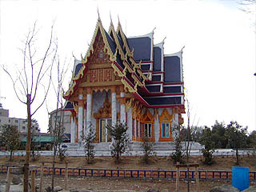 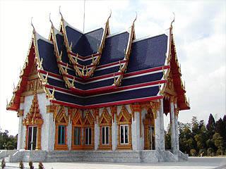 しかし、そんな周りの切ない空気をよそに本堂はどうしてどうして立派なものである。 かなり本格的なタイ寺院である。真っ白な大理石で仕上げられた基段部、手の込んだ窓飾り、金に輝く軒飾り、タイ国旗を思わせる赤と紺色の屋根。 どこから見ても立派なタイ式のお寺だ。ただし千葉だが。 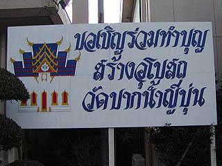 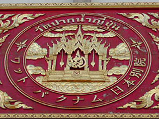 境内には研修所のような建物があり、そこにホンモノのタイのお坊さんが何人かいた。宿坊のようなところだ。 あと信者と思しき人達もみ〜んなタイの人。 ああ、ここは在日タイ人のサンクチュアリだ〜。 何がどうなってここにタイのお寺が建ったのかは良くわからないが、間違いなくここはタイの人達の心の拠り所となっているようだ。 ちなみに境内の看板はほとんどタイ語。 タイに行って来たばかりの身としては結構嬉しかったりする。 逆にいえば日本人にタイ仏教を布教しようとかそういう目的で建てられたモノではないようだ。 お坊さんに声をかけてから本堂に上がらせてもらった。 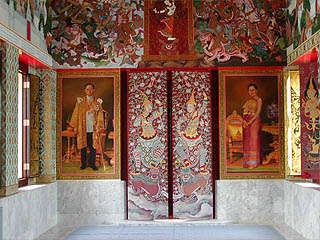 本堂は十字架型の平面を持つ。上写真は正面の入口を中から見たところ。 扉の両脇には国王陛下と女王陛下の肖像画が。さっすがタイ寺院。 上の方には様々な絵が描かれていた。 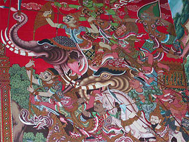 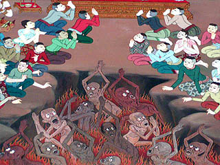 かなり凶悪そうな象。地獄の亡者。亡者のビックリした表情と拝んでる人達の無表情の対比の妙よ。 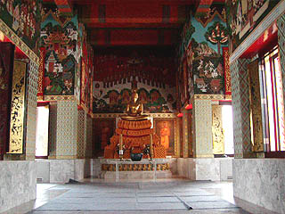 正面。 中央には本尊がぽつんと置かれている。一寸淋しげ。 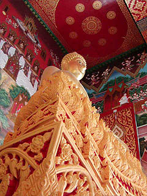 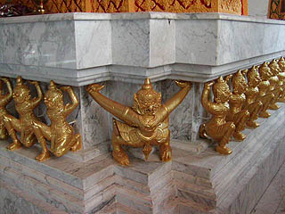 台座の下には縁の下の力持ちが頑張ってます。 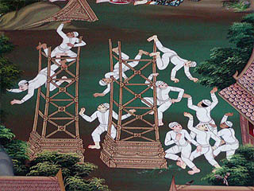 本尊の裏にも様々な楽しい壁画が。コレは特殊な器械を使った組体操か？ あああっ！コレ知ってる！タイのワットパーラックロイで見たぞ！ そっか〜・・・ちゃんとした仏教説話だったのか〜。 ところでこの絵は何を表しているのか、何が起こっているのか、全く想像がつかない。 少なくともこの絵を見て「仏様って偉いな〜」とは絶対思わないのだが・・・御存じの方は教えて下さい。 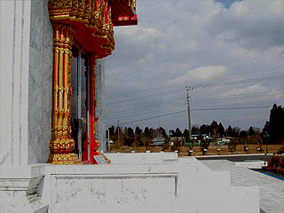 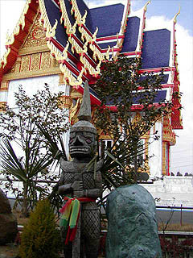 本堂から出るとそこは寒風吹きすさぶ農村風景。落花生にも似た茶色い光景がイタイ。 しつこいようだがここは千葉。 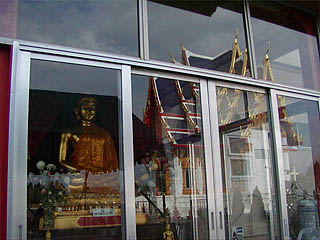 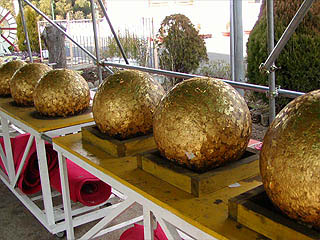 本堂の裏手には仏像、というか聖母さんか何かなのだろうか、女性の像（勿論金色）が安置されていた。 その向かいには何故か金色に輝く球が。脇には賽銭箱と金箔のシートが置かれている。 これは参拝者が金箔を貼って御利益を得るというものらしい。 金箔を仏像に貼るのはタイやミャンマーなどで見かけたが、玉に金箔を貼ってあるのは初めて見た。 一つだけならまだしも・・・ 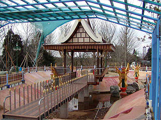 本堂の前には池があって中央にあづま屋が建っている。 水はやや枯れ気味だったが四隅に立つ龍のモニュメントがめっちゃタイらしかったです。 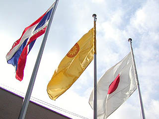 帰りがけにまた宿坊に寄る。 聞けばこの本堂は今年出来たばかりらしい。 というか配電盤のフタとか開けっ放しだったから、もしかしたらまだ完成していないのかもしれない。 実はタイ人のお坊さん日本語が完璧でないので、今年出来たのか今年出来るのかちょっと判らなかったもんで・・・ 宿坊の玄関脇を見るとバケツに入った供え物セットが並んでいた。 このお供物セット、タイではかなりポピュラーなモノで、仏具屋や門前町の屋台は勿論、普通のスーパーや雑貨屋、コンビニなどにも売られていた。 ただ、日本では絶対手に入るモノではないのでタイから輸入しているかわざわざバケツを買って来て自作しているかのどちらかだろう。 そんなお供物ひとつとっても純粋なタイの仏教を持ち込むというのは大変な事だと思う。 タイと日本とワットパクナムの旗。この地にタイ仏教が根付くといいですね。
2004.1.
珍寺大道場 HOME